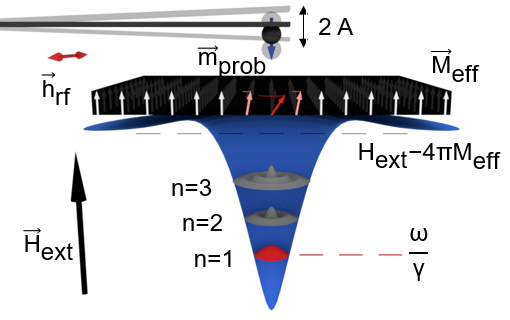
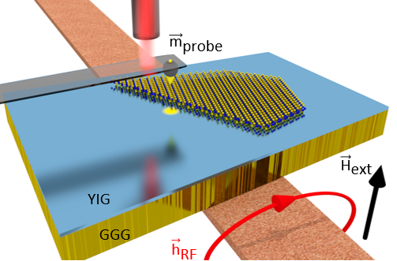
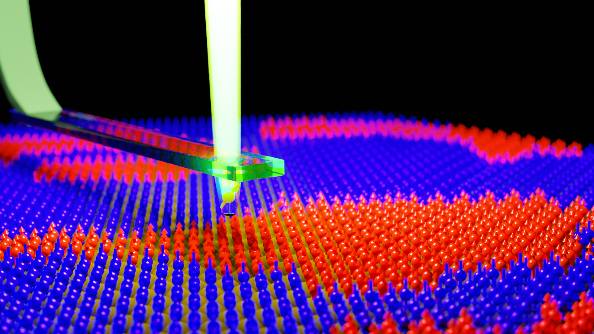

1. Nanoscale MRI
Magnetic resonance imaging (MRI) technique is a non-invasive technique to acquire structral information of the an object by detecting the radio freqeucny (RF) response. Traditional MRI technique utilizes strong magnetic field gradient to confine the RF response to a narrow spacial slice. MRI scanner for medical use can acieve spatial resolution in the order of 1mm. Further spatial reolution improvement is hamperred by the difficulty of generating larger field gradient using electromagentic coils. However, multiple nanoscale MRI techniques has been achieved in laborotary and which give unprecedented information of spin dynamics in magnetic nanostructures.
Magentic Force Microscope (MRFM)
I am focuing on one of the techniques called magnetic resonance force microscope (MRFM) in Prof. P. Chris Hammel's group. Like magnetic force microscope, MRFM detect magnetic information inside the sample through magnetic dipolar interaction. Imaging of single electron spin has been achieved (Rugar, Daniel, et al. Nature 430.6997 (2004): 329-332.). It
My research focuses on developing ferromagnetic resonance force microscope (FMRFM), an extended mode of MRFM, and utilizing it to study the various magnetic nanostructrues. In ferromagetic material, due to strong exchange interaction, it is generally difficult to achieve local MRI which requires the isolation of a small volume of material from its strongly coupled environment. The novelty of FMRFM is that its magnetic tip generates a local field well strong enough to hold localzied standing spin wave modes (LMs) analogous to the spin wave modes in a ferromagentic disk. The detection is through the magnetic dipolar interaction between the LMs and the magnetic tip since the precession of LMs will cause local reduction of magnetization. The spatial resolution of FMRFM is generally determined by the radius of localized modes, which is in the order of 1 micron, although higher spatial resolution can be achieved utilizing multi-mode imaging.
One of the recent success of FMRFM is in studying interfacial magnetic interaction in ferromagnet/non-magnetic material heterostructures.
Nitrogen Vacancy (NV) Center

2. Hybrid Magnonics
Magnon as information carrier have many advantages compare to electrons in traditional electronic devices. Without scattering between itinerant electrons with atomic ions, magnon transport produce much less Joule heating. Currently, two paths to achieve magnonic devices are:
1. Wave transport of low frequency coherent magnons.
2. Diffusive transport of high frequency incoherent magnons.
3. Micromagnetic Simulation
Micromagnetic simulation is a strong tool to numerically simulate the response of ferromagnetic materials and structures to external excitation.